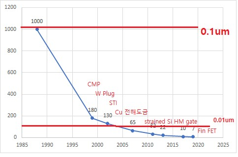

① CMP : 반도체 칩의 다층화가 이루어 지자 포토 공정 등에서 평탄하게 만들필요가 생김
② W plug : 반도체 칩의 다층화가 이루어 지자 금속 배선 구조가 복잡해져 금속과 금속을 이을 Plug가 개발됨
③ STI : 소자끼리의 Isolation을 시키면서 기존에는 LOCOS 공정으로 선택적 산화를 시켰으나 Birds Beak 효과로 점점 작아지는 칩을 넣을 공간이 없어져 STI(Shallow Trench Isolation) 개발. LOCOS는 Diffusion을 이용(Oxidation)하여 Oxide를 생성했지만, STI는 Oxide를 Deposition시킴.
④ Cu 전해도금 : 기존에는 금속 배선을 Al을 사용하였으나 Al의 경우 저항열로 인한 Electromigration(물질이동)문제가 있어 저항이 낮은 Cu 사용, Cu 녹는점이 900℃로 매우 높아 Deposition 불가능하므로 전해도금으로 배선 공정 진행. 하지만 Cu의 확산문제로 인해서 Ta/TaN 이중 Barrier metal 사용해야한다.
아니면!! Al-0.5% Cu 합금을 이용하여 Electromigration 문제 해결하기도함. 아마도 현재는 이방법으로 사용하고 있는 듯하다.
⑤ low-k Dielectric 재료 : 금속 배선을 Cu로 바꾸게 되면 Cu의 경우 계면에서 매우 취약하다는 단점이 있다. 또한 high-k 재료라서 전제적으로 Capacitance가 높다는 문제가 있어 low-k 재료로 Cu와 닿는 부분 라인 전체에 Capping layer을 깔아준다.
⑥ strained Si : 사실은 Ge가 Si보다 캐리어 이동도가 더 빠르다. 하지만 경제적인걸 고려했을 때 Si을 웨이퍼로 사용한것이고, Si 웨이퍼에서 캐리어 이동도를 빠르게 하기 위해서 Si을 찌그러뜨리는 방법이 있다.
⑦ High-k in MOSFET : 소자가 작아질수록 즉, Channel Length(Gate Length)가 작아질수록 Gate Oxide, 곧 EOT(Equivalent Oxide Thickness)가 비이상적으로 작아진다. Channel Length가 16nm이면 EOT가 0.5Å가 되버리는데, 이 두께는 증착이 불가능, 이때 HfO2와 같은 High-k(유전율) 재료를 이용하여 SiO2와 똑같은 성능을 내되 Gate Oxide 두께를 확보할수 있다.
⑧ Fin FET :일종의 3차원 구조로 하여 캐리어 이동 경로를 확보하고 동시에 누설전류를 차단하는 기술